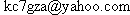

Help/Feedback
I've tried my best to make sure that almost everyone should find everything they need to know about the prefbar right here in this help system. However, if you have read all this and still need help, you've come to the right place. Read on for more info.
Questionless Emails
Press Contact
Check the FAQ
My email address
Internet Sites
Questionless Emails
Some people write me emails just to say they enjoy using the prefbar and think it's a really great application. I really enjoy getting these emails; it makes you feel appreciated. If you want to send one, just forget about all the FAQ stuff and mail it off.
I sometimes have time to reply to these emails, and sometimes don't. If you send one and don't get a reply, it probably means that I got a lot of other email that day and just didn't get to yours. Don't take it personal; just assume that I would have replied and said thanks had I had the time.
Also, I'm always taking feature suggestions, so if there's something you would like to see in a future version of the prefbar, let me know and I'll add it to the list.
Press Contact
If you are reviewing the prefbar, mentioning it in an article about mozilla, or wish to include it in a freeware archive or CD, you can contact me at my reqular email address.
Check the FAQ
If you have a question, be sure to check the FAQ before sending me email to make sure your question isn't listed there. Right now there actually aren't a whole lot of questions in the FAQ, but I hope to fill it up with real user questions as I get asked them after the first version of the PrefBar2 is released.
My email address
Finally, if you've done everything and checked the FAQ and read all this stuff and wish to email me, the best way to do it is via the contact page on xulplanet. This will allow me to sort and keep track of the emails I recieve better, and hopefully get you a responce faster.
If for some reason you can't use the xulplanet contact page (or it isn't working), my email address is .
Despite the fact that I've hidden the address way down here, I really quite enjoy receiving emails from PrefBar users, so if you've got a question, comment, feature suggestion, or a good recipe for egg drop soup, I'd love to hear from you.
Internet Sites
For more information on the PrefBar, myself, and some of my other applications, you might want to check out The PrefBar Homepage, My Personal Homepage, and My Weblog.